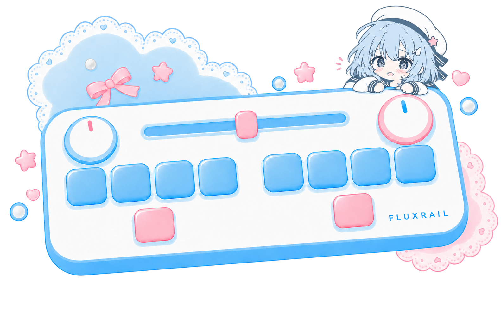
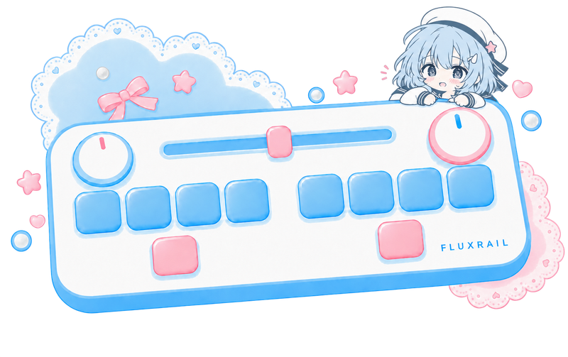
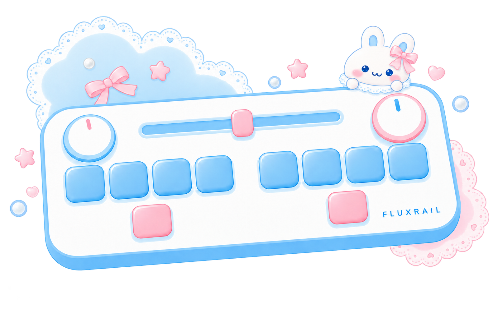

网页标志／后续角色衍生
主题配色半身
1254 × 1254
素材信息
ID：theme-halfbody-v1
SHA-256：cc72cd4146c068b9a3a35d2f19d6177099dd274ab29e533e4b70ebe12fd117df
保留喜欢的角色，从同一形象继续创作。
v1 · 2026-10-05 · 推荐使用主题配色版
1254 × 1254
ID：theme-halfbody-v1
SHA-256：cc72cd4146c068b9a3a35d2f19d6177099dd274ab29e533e4b70ebe12fd117df
1254 × 1254

1582 × 994
ID：theme-controller-v1
SHA-256：89ae344193b3c7f732d6cc83e3d619800aa139aa368a33f6dc4091ac41fc29a8
1254 × 1254
ID：approved-original-v1
SHA-256：50c88e70e9d5f3cf64ecd583d557d549f2a55441eefb33aa978dfefe858df009
1254 × 1254
ID：avatar-original-v1
SHA-256：56f9d1ee6d46c6c31ec41922ff08303a03b8fc604cc2588bfcc6a6bfbd8d2f74
1582 × 994
ID：controller-original-v1
SHA-256：478f4500dede75cd5a9919998bd1ea9ac6c155545ad10b56c8e6d3f50b5e843a
1254 × 1254
ID：monochrome-draft-v1
SHA-256：466f489545700b9ce61795b7fc270d642f6fac45f4ae5d4a430287c548d2e36b
1254 × 1254
ID：waterdrop-draft-v1
SHA-256：d6f964fe301fe5f790e4d0af764a6b9960bfaa87ec43ec3a0589ece71f302ad3
1254 × 1254
ID：glossy-girl-draft-v1
SHA-256：57546e581a784fdf9cc812100d1b1857f18020484507baf6748029a0dbc09e8d
1254 × 1254
ID：cat-waterdrop-draft-v1
SHA-256：c70d3bd0bfcb711762aa48a35f71e7b1fd3a731a4412301f1da72fd83cfd3348

256 × 256

800 × 503
32 × 32
ID：icon32-export-v1
SHA-256：7d699c6419d14e9959d9fd8d7899e65ef6b1ba826cc445b6e0a6509836479dbb
180 × 180
ID：icon180-export-v1
SHA-256：f47e4c03b10552d0d872c0c690714c6a8a907cdcf1aa3f303a0d094afba2fef1
192 × 192
ID：icon192-export-v1
SHA-256：26ad41d7422c4235176aba7c156001757faabcfba4affcff09f01fc2f090e841
16 / 32 / 48 px
251 × 348
ID：user-manga-reference-v1
SHA-256：8e5549678d55a4d782f5532dcbc577d99e5f00510c17705200c6267260e8f163

1582 × 994
ID：controller-base-v1
SHA-256：caf5f77ccada9e04011469bec6ebcf5d82d8ed96a3128a5d30f8c8acf3b097e1